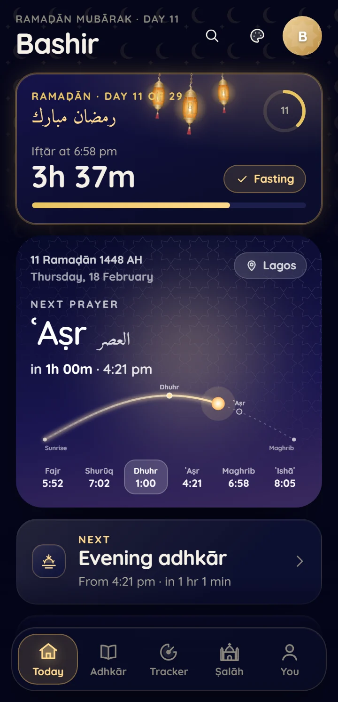
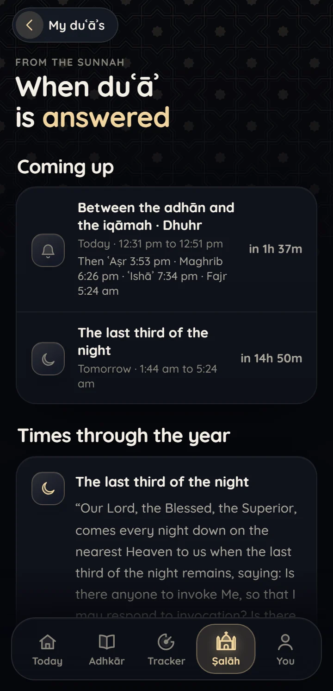
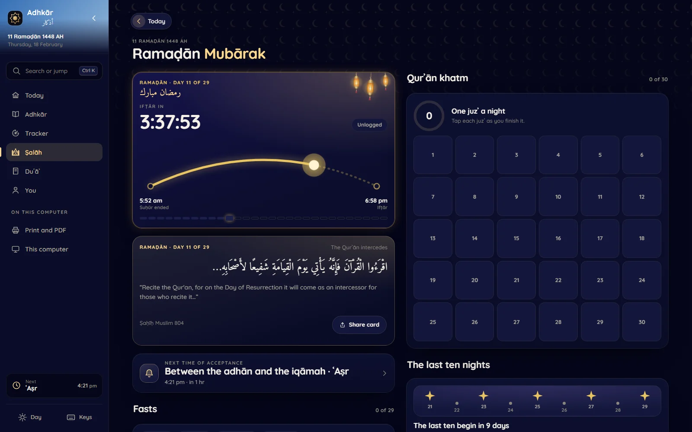

رَمَضَان
Ramaḍān is
almost here.
Meet the companion for every day and night of it.

Ifṭār at 6:58 pm
3:37:53
Suḥūr & ifṭār
Ifṭār,
to the minute.
Worked out on your phone for your city. No internet needed.
DAY 11 OF 29
Your fasts
Every fast,
counted.
Tap a day to log whether you fasted.
Now · answered time
Times of answered duʿāʾ
Ask when duʿāʾ
is answered.
The authentic times from the Sunnah, found for your city every day.

Adhkār · now
The last third of the night
It lasts until Fajr at 5:52 am. Call upon your Lord.
Your duʿāʾ:
My duʿāʾs
Your duʿāʾs,
at the right moment.
A private journal, with reminders at the times of acceptance.
اللَّهُمَّ إِنَّكَ عَفُوٌّ تُحِبُّ الْعَفْوَ فَاعْفُ عَنِّي
O Allah, indeed You are Pardoning, You love pardon, so pardon me.
AT-TIRMIDHĪ 3513 · ṢAḤĪḤ (AL-ALBĀNĪ)
The last ten nights
Seek
Laylat al-Qadr.
Every odd night marked, with its duʿāʾ ready.
0°
TURN TO FACE
☀
Sun mode when there's no compass
Qibla
Face the qibla,
anywhere.
A live compass that settles on the Kaʿbah, in any city, offline.
Break from ṣalāh · day 3
Your remembrance continues
Adhkār, duʿāʾ and dhikr are all still yours. Prayer tracking and prayer reminders are paused, and your streak is protected.
Times of duʿāʾ
End break
✓
Streak protected
◔
Reminders paused
✦
Learns your cycle · you decide
Made for sisters
On a break,
still close.
Private and on your phone only. It never decides for you.
Fasted
Break
Missed
0
Make-up · qaḍāʾ
Fasts to make up
Missed fasts
Missed fasts,
made up.
Break days and missed days become make-up fasts. Tick each one off as you go.
0
NIGHTS
Tarāwīḥ
Qurʾān khatm
Juzʾ 0 of 30
Night by night
Tarāwīḥ and
your khatm.
Every night you stand, every juzʾ you read, kept in one place.

On your computer
Ramaḍān on a
bigger screen.
See ifṭār, your fasts and Qurʾān progress side by side.
Adhkār
رَمَضَان مُبَارَك
Ramaḍān Mubārak
Join the Android beta · link below